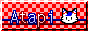
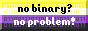
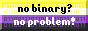
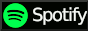
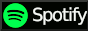

hiiiii!!! :3
hiiiii!!! :3
hiya! I'm Atapi / Sterophonick (he/she/they)! I am a cute kitty cat on the internet that likes to do funny computer things! I like learning GNU/Linux, retrocomputing, emulation, reverse engineering, and the like!I I also mysteriously have a knack for the Nintendo Game Boy Advance. I'm a bit of a nerd, I know. :3

This website is more or less a place for me to put all the stuff I have made.
Come in and take a look! 
Make sure you have fun!
Oh! I'm studying computer engineering! Yes indeed, I'm a busy college student! Wheeeeee!
and i'm, like. really really queer. its so epic!
Here's my web button to link on your own site!

While you're here, why don't you sign my guestbook!

(Make sure you force HTTP!)
oh here's what i've been listening to lately!
LastFM integration courtesy of JeffreyCA.


 



 



this site is best viewed using Ned's cape 1.0 or lower